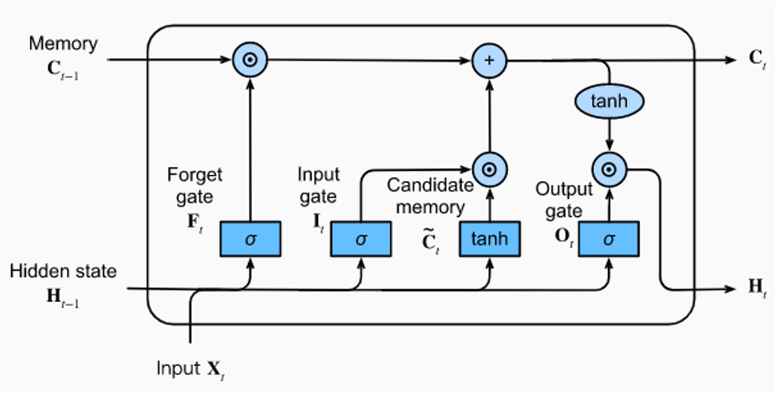

Text predicition with LSTM's
RNN's have a huge problem when you try to use them for very long sequencees for example sequences of text, during gradient descent with backprop, you will encounter at some point, with 100% certainty, either a vanishing gradient or exploding gradient, this is because the RNN unfolds the whole sequence when doing backprop, but LSTM produces long and short term memory capabilities by having 2 paths that adjust during process.
The upper path is the cell state (long-term) and the bottom path is the hidden state (short-term), where only the hidden state interacts directly with the weights, the cell state is adjusted according to the changes happening in the hidden state
Specifically, the forget gate determines how much of the cell gate will be remembered, then in the middle, potential long-term memories are created in the candidate memory and the same way as before, the input gate determines what percentage of this potential long-term memory will be added to the cell state (long-term memory), then at the output gate, the long-term memory that was recently created in the previous step is used to generate what will be the short-term memory for the next cycle
For this experiment, the idea is to use as dataset the work made by shakespeare, tons of text, the text is gonna be chopped into sequences from where the model is gonna learn patterns
import torch
from torch import nn
import torch.nn.functional as F
import numpy as np
import matplotlib.pyplot as plt
%matplotlib inline
with open('/content/sample_data/shakespeare.txt','r',encoding='utf8') as f:
text = f.read()
print(text[:1000])
#first step is to encode text, in this case by character
all_chars = set(text)
#then we need to create like a look up table, with a dict
decoder = dict(enumerate(all_chars))
list(decoder.items())[:30]
#then exactly the opposite for the decoder
encoder = {char: ind for ind,char in decoder.items()}
#and fially we encode the text
encoded_txt = np.array([encoder[char] for char in text])
#now we do a one hot encoding
def one_hot_encoder(encoded_text, num_uni_chars):
#where:
#encoded_text : batch of encoded text
#num_uni_chars = number of unique characters (len(set(text)))
# METHOD FROM:
# https://stackoverflow.com/questions/29831489/convert-encoded_textay-of-indices-to-1-hot-encoded-numpy-encoded_textay
# first create a placeholder for zeros.
one_hot = np.zeros((encoded_text.size, num_uni_chars))
# Convert data type for later because otherwise I got erros
one_hot = one_hot.astype(np.float32)
# now we put a 1 in the corresponding location of the index
one_hot[np.arange(one_hot.shape[0]), encoded_text.flatten()] = 1.0
# Reshape it so it matches the batch sahe
one_hot = one_hot.reshape((*encoded_text.shape, num_uni_chars))
return one_hot
#testing the function
one_hot_encoder(np.array([1,2,0]),3)
def gen_batch(encoded_text, samp_per_batch=10, seq_len=50):
'''
train_data: Encoded Text of length seq_len
labels: Encoded Text shifted by one char
for example if the train data is
train : [[1 2 3]]
then the label (the target) will be
labels:[[2 3 4]]
so, the idea is that given a piece of text, the model will try to predict whats the next
thing you wanted to say, according to what he learned during training,
but since the dataset is quite small It might give nonsense responses, naturally, for language models
the more data and computational power, the better
encoded_text : Complete Encoded Text to make batches from
batch_size : Number of samples per batch
seq_len : Length of character sequence
'''
# Total number of characters per batch
# Example: If samp_per_batch is 2 and seq_len is 50, then 100
# characters come out per batch.
char_per_batch = samp_per_batch * seq_len
# Number of batches available to make
# Use int() to roun to nearest integer
num_batches_avail = int(len(encoded_text)/char_per_batch)
# Cut off end of encoded_text that
# won't fit evenly into a batch
encoded_text = encoded_text[:num_batches_avail * char_per_batch]
# Reshape text into rows the size of a batch
encoded_text = encoded_text.reshape((samp_per_batch, -1))
# Go through each row in array.
for n in range(0, encoded_text.shape[1], seq_len):
# Grab feature characters
x = encoded_text[:, n:n+seq_len]
# y is the target shifted over by 1
y = np.zeros_like(x)
#
try:
y[:, :-1] = x[:, 1:]
y[:, -1] = encoded_text[:, n+seq_len]
# FOR POTENTIAL INDEXING ERROR AT THE END
except:
y[:, :-1] = x[:, 1:]
y[:, -1] = encoded_text[:, 0]
yield x, y
#testing the generator of batches for sanity check
sample_text = encoded_txt[30:50]
sample_text
batch_generator = gen_batch(sample_text,samp_per_batch=4,seq_len=5)
x, y = next(batch_generator)
#now the model architecture, in this case a LSTM
class CharModel(nn.Module):
def __init__(self, all_chars, num_hidden=256, num_layers=4,drop_prob=0.5,use_gpu=False):
# SET UP ATTRIBUTES
super().__init__()
self.drop_prob = drop_prob
self.num_layers = num_layers
self.num_hidden = num_hidden
self.use_gpu = use_gpu
#CHARACTER SET, ENCODER, and DECODER
self.all_chars = all_chars
self.decoder = dict(enumerate(all_chars))
self.encoder = {char: ind for ind,char in decoder.items()}
self.lstm = nn.LSTM(len(self.all_chars), num_hidden, num_layers, dropout=drop_prob, batch_first=True)
self.dropout = nn.Dropout(drop_prob)
self.fc_linear = nn.Linear(num_hidden, len(self.all_chars))
def forward(self, x, hidden):
lstm_output, hidden = self.lstm(x, hidden)
drop_output = self.dropout(lstm_output)
drop_output = drop_output.contiguous().view(-1, self.num_hidden)
final_out = self.fc_linear(drop_output)
return final_out, hidden
def hidden_state(self, batch_size):
'''
Used as separate method to account for both GPU and CPU users.
'''
if self.use_gpu:
hidden = (torch.zeros(self.num_layers,batch_size,self.num_hidden).cuda(),
torch.zeros(self.num_layers,batch_size,self.num_hidden).cuda())
else:
hidden = (torch.zeros(self.num_layers,batch_size,self.num_hidden),
torch.zeros(self.num_layers,batch_size,self.num_hidden))
return hidden
model = CharModel(
all_chars=all_chars,
num_hidden=178,
num_layers=3,
drop_prob=0.5,
use_gpu=True,
)
total_param = []
for p in model.parameters():
total_param.append(int(p.numel()))
optimizer = torch.optim.Adam(model.parameters(),lr=0.001)
criterion = nn.CrossEntropyLoss()
#now from the text usually 90% is used for training and the rest
#is used for testing or validation
train_percent = 0.1
train_ind = int(len(encoded_txt) * (train_percent))
train_data = encoded_txt[:train_ind]
val_data = encoded_txt[train_ind:]
#now setting parameters for training
# Epochs to train for
epochs = 100
# batch size
batch_size = 128
# Length of sequence
seq_len = 100
# for printing report purposes
# always start at 0
tracker = 0
# number of characters in text
num_char = max(encoded_txt)+1
# Set model to train
model.train()
# Check to see if using GPU
if model.use_gpu:
model.cuda()
for i in range(epochs):
hidden = model.hidden_state(batch_size)
for x,y in gen_batch(train_data,batch_size,seq_len):
tracker += 1
# One Hot Encode incoming data
x = one_hot_encoder(x,num_char)
# Convert Numpy Arrays to Tensor
inputs = torch.from_numpy(x)
targets = torch.from_numpy(y)
# Adjust for GPU if necessary
if model.use_gpu:
inputs = inputs.cuda()
targets = targets.cuda()
# Reset Hidden State
# If we dont' reset we would backpropagate through all training history
hidden = tuple([state.data for state in hidden])
model.zero_grad()
lstm_output, hidden = model.forward(inputs,hidden)
loss = criterion(lstm_output,targets.view(batch_size*seq_len).long())
loss.backward()
# POSSIBLE EXPLODING GRADIENT PROBLEM!
# LET"S CLIP JUST IN CASE
nn.utils.clip_grad_norm_(model.parameters(),max_norm=5)
optimizer.step()
###################################
### CHECK ON VALIDATION SET ######
#################################
if tracker % 25 == 0:
val_hidden = model.hidden_state(batch_size)
val_losses = []
model.eval()
for x,y in gen_batch(val_data,batch_size,seq_len):
# One Hot Encode incoming data
x = one_hot_encoder(x,num_char)
# Convert Numpy Arrays to Tensor
inputs = torch.from_numpy(x)
targets = torch.from_numpy(y)
# Adjust for GPU if necessary
if model.use_gpu:
inputs = inputs.cuda()
targets = targets.cuda()
# Reset Hidden State
# If we dont' reset we would backpropagate through
# all training history
val_hidden = tuple([state.data for state in val_hidden])
lstm_output, val_hidden = model.forward(inputs,val_hidden)
val_loss = criterion(lstm_output,targets.view(batch_size*seq_len).long())
val_losses.append(val_loss.item())
# Reset to training model after val for loop
model.train()
print(f"Epoch: {i} Step: {tracker} Val Loss: {val_loss.item()}")
model_name = 'book1.net'
torch.save(model.state_dict(),model_name)
model = CharModel(
all_chars=all_chars,
num_hidden=178,
num_layers=3,
drop_prob=0.5,
use_gpu=True,
)
model.load_state_dict(torch.load(model_name))
model.eval()
#now it's time to generate some predictions
def predict_next_char(model, char, hidden=None, k=1):
# Encode raw letters with model
encoded_text = model.encoder[char]
# set as numpy array for one hot encoding
# NOTE THE [[ ]] dimensions!!
encoded_text = np.array([[encoded_text]])
# One hot encoding
encoded_text = one_hot_encoder(encoded_text, len(model.all_chars))
# Convert to Tensor
inputs = torch.from_numpy(encoded_text)
# Check for CPU
if(model.use_gpu):
inputs = inputs.cuda()
# Grab hidden states
hidden = tuple([state.data for state in hidden])
# Run model and get predicted output
lstm_out, hidden = model(inputs, hidden)
# Convert lstm_out to probabilities
probs = F.softmax(lstm_out, dim=1).data
if(model.use_gpu):
# move back to CPU to use with numpy
probs = probs.cpu()
# k determines how many characters to consider
# for our probability choice.
# https://pytorch.org/docs/stable/torch.html#torch.topk
# Return k largest probabilities in tensor
probs, index_positions = probs.topk(k)
index_positions = index_positions.numpy().squeeze()
# Create array of probabilities
probs = probs.numpy().flatten()
# Convert to probabilities per index
probs = probs/probs.sum()
# randomly choose a character based on probabilities
char = np.random.choice(index_positions, p=probs)
# return the encoded value of the predicted char and the hidden state
return model.decoder[char], hidden
def generate_text(model, size, seed='The', k=1):
# CHECK FOR GPU
if(model.use_gpu):
model.cuda()
else:
model.cpu()
# Evaluation mode
model.eval()
# begin output from initial seed
output_chars = [c for c in seed]
# intiate hidden state
hidden = model.hidden_state(1)
# predict the next character for every character in seed
for char in seed:
char, hidden = predict_next_char(model, char, hidden, k=k)
# add initial characters to output
output_chars.append(char)
# Now generate for size requested
for i in range(size):
# predict based off very last letter in output_chars
char, hidden = predict_next_char(model, output_chars[-1], hidden, k=k)
# add predicted character
output_chars.append(char)
# return string of predicted text
return ''.join(output_chars)
print(generate_text(model, 1000, seed='The ', k=3))
After around 1h hour of training using the GPU's from google colab, the model does generates text that looks somewhat shakespeare-ish superficially, but if you pay close attention you quickly notice that it doesnt make a lot of sense, here is the limit for LSTM's when it comes to NLP which tells you that attention is all you need, as proven by transformers
The and and that their best of
In the war a she sees of him of the store and me all.
ANTONY. Which his selve is my liens than that to the wist
That sen a shall the stange thee true to me, whele them a start,
I honour a shall the fathing the with of his will both thee.
[ [CHARMIAN
Exeunt
SCENE II.
The wasting the friends
To sell the from this the for thee and see
Thou art me wither of my shall have than and man the
the born of the brother and trust as the sharler thee are
To the self to me the selve, and the brook of the
the sen a songer, and that what the with the self of my
with the bean to the see to my like.
Exeutt to SAESAR
ENOS, I have treed a man he the farther, and serfe the serve
as the wish a thare the world. I how he world the she to thee thee.
PAROLLES. I have the way have thee a trest of the shall thee worth the start,
to his say